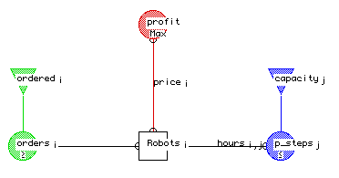

A Factory produces three types of robots called 'John', Kevin' and 'Jane'.
Three production steps must be carried out:
Profit is $300 for John, $200 for Kevin and $100 for Jane. Of type John robots, 20 have already been ordered. Of type Kevin 15, and of type Jane 10. How many robots of each type must be produced in order to maximize the sales profit?
